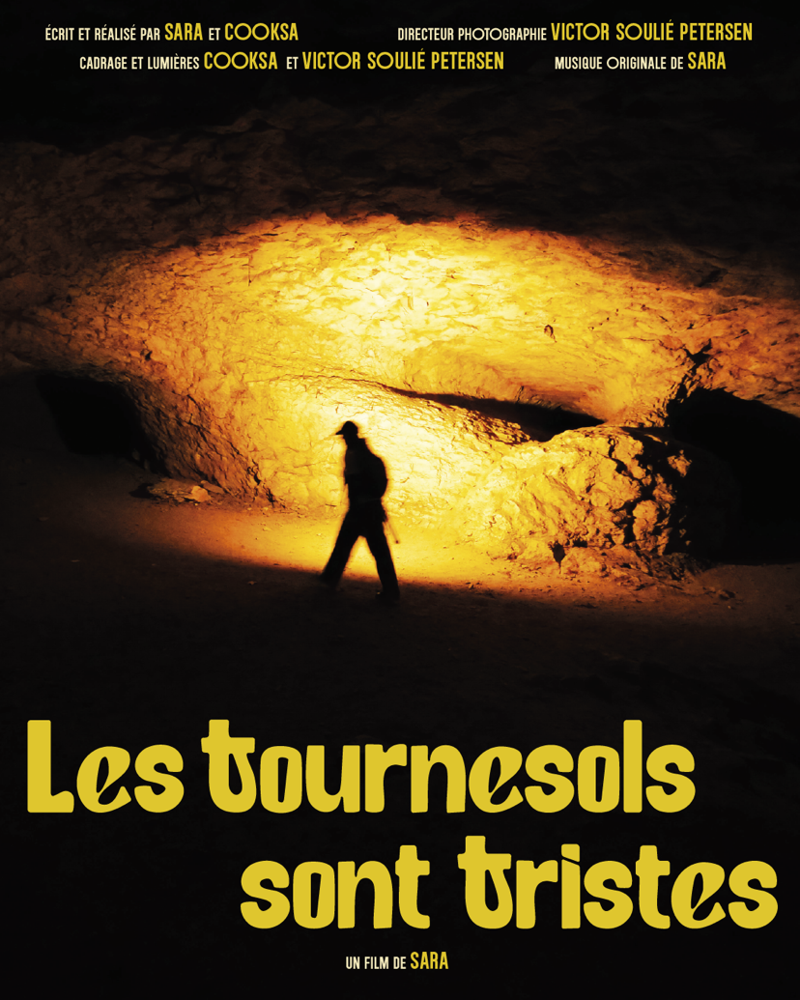
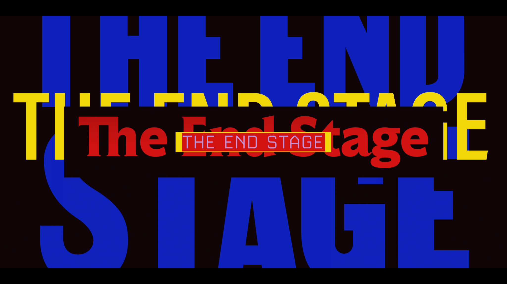
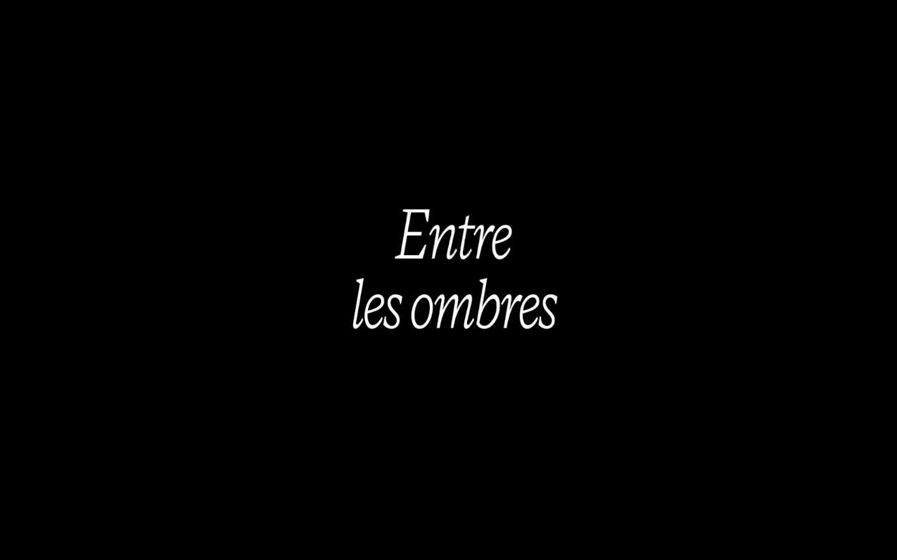
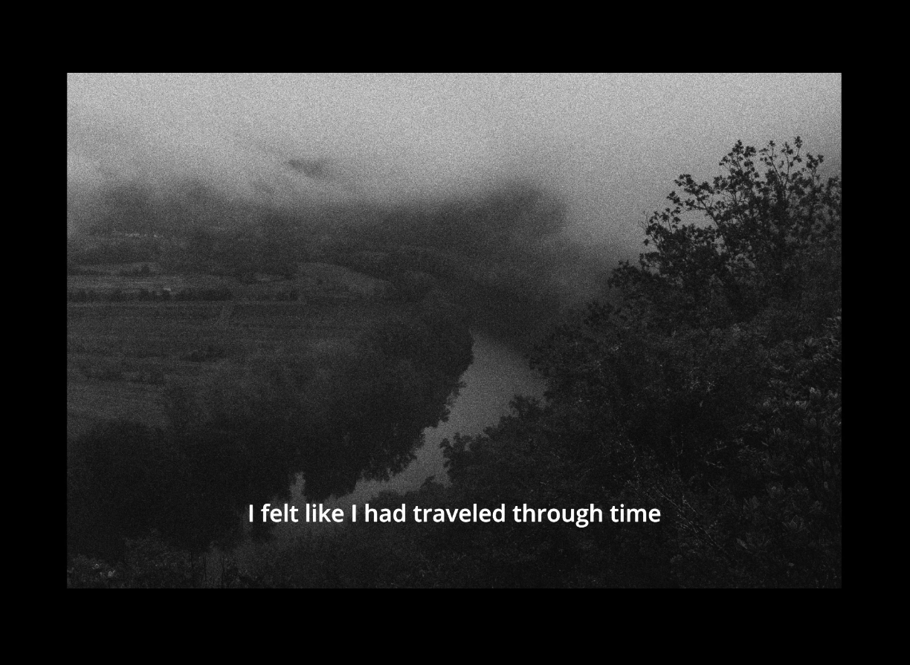
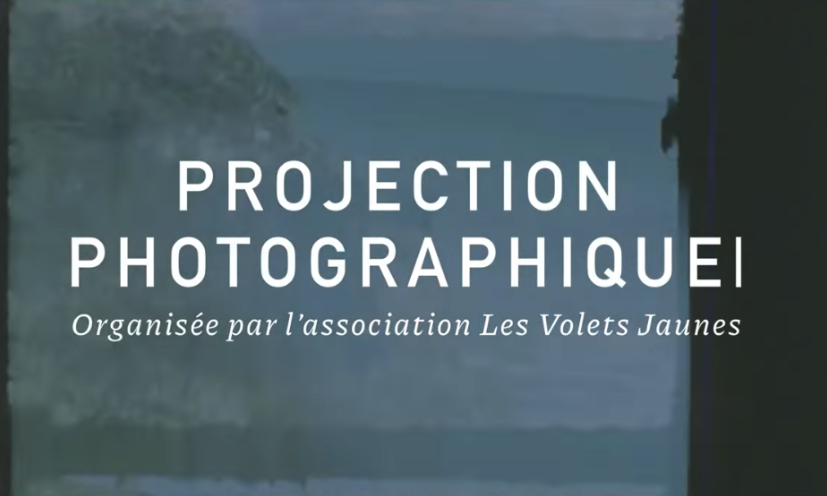
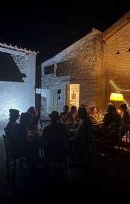

LES TOURNESOLS SONT TRISTES, short film, 2025
Watch here.
Director: Sara and Cooksa
Photography diredctor: Victor Soulié Pertersen
Lights: Cooksa and Victor Soulié Pertersen
Written and produced by Sara Boulet
Sound mixage and mastering: Charlène Levasseur

THE END STAGE, documentary film, 2025
Premiere coming in 2025. An independent documentary featuring interviews with some interesting people, including Slavoj Zizek and Temple Grandin, among others. The film is based around the idea posed by philosopher Walter Benjamin that capitalism is a train that eventually ends in a head-on crash
Director: Seungjae Oh
Design animations, title and endtitle sequence by Aaron Björk
Sound by Kasper Kaae, Petra
Sound design by Nat Bradley
Ending title song by Charlène Levasseur

Restitution of workshop with Gabrielle Duplantier, Photography film, 2025
Watch here.
An independent photography film featuring interviews images taken in a intensive workshop during summer 2025, including images from the participants
Director: Julia Castel and Gabrielle Duplantier
Video production: Julia Castel and Gabrielle Duplantier
Photography editing: Julia Castel and Gabrielle Duplantier
Sound editing by Charlene Levasseur
Mixage and mastering

Restitution of workshop with Michael Ackerman, Photography film, 2024
Watch here.
An independent photography film featuring interviews images taken in a intensive workshop during summer 2024, including images from the participants
Director: Julia Castel and Michael Ackerman
Video production: Julia Castel and Michael Ackerman
Photography editing: Julia Castel and Michael Ackerman
Sound editing : Charlene Levasseur
Mixage and mastering by Charlene Levasseur

Restitution of workshop with Patricia Morosan, Photography film, 2024
Watch here.
">Watch here.
An independent photography film featuring interviews images taken in a intensive workshop during summer 2024, including images from Anna Sweden, Marie Julliard, Vincent Boissonnat, Catherine, Virginie Gueguen.
Director: Julia Castel and Patricia Morosan
Video production : Julia Castel and Patricia Morosan
Photography editing : Julia Castel and Patricia Morosan
Sound design: Charlène Levasseur and Marie Deback
Sound editing: Charlène Levasseur
Mixage and mastering: Charlène Levasseur
CROISEMENT, photography film, 2024
Watch here.
Director: Pauline Dupin
Production: Mediatheque d'Estretefond, Aurore Degoit, Dorris France-Oillan Menyé et Cathy Tran Tu San
Photographies: Pauline Dupin
Video production and photography editing: Pauline Dupin and Maxime Duhamed
Music written bh Charlene Levasseur
Mixage and mastering: Charlene Levasseur

Restitution of workshop with Martin Bogren, Photography film, 2024
Watch here.
An independent photography film featuring interviews images taken in a intensive workshop during summer 2023. Intuitive photography with Martin Bogren. Martin Bogren is a Swedish photographer based in Berlin. Since 2008 he has been the author of critically acclaimed photobooks including Tractor Boys, Italia, August Song,Passenger and his recently published Metropolia. He has exhibited at numerous galleries internationally and is represented by Galerie VU in Paris.
Director: Patricia Morosan
Video production: Julia Castel and Patricia Morosan
Photography editing: Julia Castel and Patricia Morosan
Sound design, editing: Charlène Levasseur
Mixage and mastering: Charlène Levasseur
VIDEO ORDER
SUMMER'S CELL, video clip 5:59, 2020
This video clip was made for the artist Halosaur to mark the release of his album "Lonely Shapes" on Rythm and Cult. Filming took place in the Oberschoneweide forest, Berlin, Germany
Music written by Halosaur
Label: Rhythm Cult
Video producer: Charlene Levasseur
Actress: Julia Castel
DON'T WALK ALONE, video clip 4:00, 2019
Built in collaboration with the music producer Pablo Mateo. He was inspired by the film Annihilation by Alex Garland. Charlene integrated images that she tooks in Berlin's street. She comes to transform this reel images in a fantastic way with the help of her digital skills, this video grouping their common ideas
Written by Pablo Mateo
Label: Figure
Video producer: Charlene Levasseur
I KNOW YOU WANNA BITCH, video clip 3:36, 2021
Here my interpretation of the single of Wei.xzy. "I know the feeling when things ain't going the way I thought they would. I call these times a stupid bitch. These two magic words set the rhythm. There are four versions of a stupid bitch for y'all: trip original, accelerated in the interpretation of Roma Zuckerman, hypnotizing, as if it would be under thickened water, Bonus. Minimalistic by Beennooutside
Music written by Wei.xzy
Master: Artyom Tuwalski
Label: Collective Russia
Video producer : Charlene Levasseur
Actress: Aya Ando and Kitty4000
Artwork: Eleonore Verger